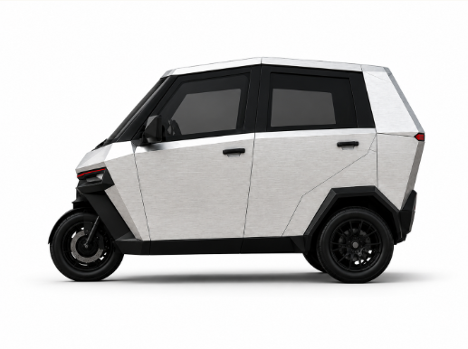

01 / Electric mobility / Team leadership
Digital dashboard & live telemetry
As group leader during my June/July vacation work at UCT, I worked with a team on a digital dashboard for an electric tuk-tuk and a web interface for live telemetry.
Embedded UI · Telemetry · Teamwork
Project notes
My contribution
Group leadership and hands-on development of the vehicle display and web telemetry interface. The project connected an embedded user interface with the information needed to understand vehicle operation.